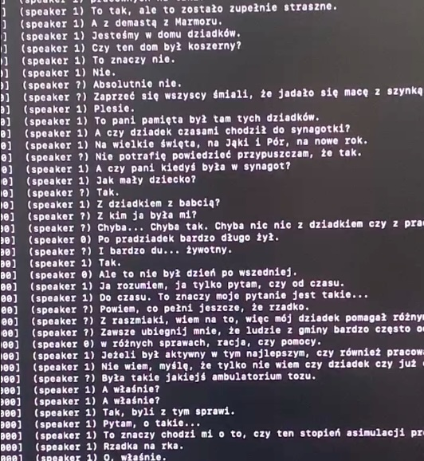
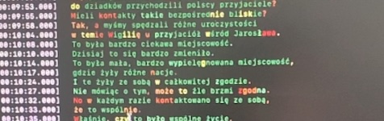

a first summer tech experiment
I’ve had some space in the past few weeks, and surprisingly, aside from the traditional creative efforts I like to focus on during times like music or writing, I got back into some tech work.
This is unusual, as my disconnect from this world has been present. The interesting part is that the recent projects I tackled were birthed a while back in my mind, though I never took time to act on them.
This is fascinatingly different from other creative endeavors.
With tech stuff, I can’t wait for inspiration to come and try to latch onto it. Either there is an idea ready to work on or I don’t have anything to do. It felt great to have stuff I could finally unpack, so I want to share some words on a project around video transcription and translation.
A long interview
There is a 2,5 hour interview my grandmother did online about the life of her family during the war. The issue (for me) is that it is in Polish. While I can follow a basic conversation, I can’t understand that long of an interview. I needed a way to get transcriptions and translations going.
After some research, it seems like whisper is the library/CLI I should use to try to transcribe the video. I had heard of the library a while back, but was really surprised that it was now runnable on a home laptop, I daily drive a Macbook M1 air, I was sceptic, but willing to try.
First instinct
My first direction was trying to transcribe the video in Polish and run the text through translation, while I would lose on the interactivity of watching her speak, but this would give me something to read.
To start, I had to five .mp4 videos to transcribe. My first inclination was to convert the .mp4 to .mp3, which was a quick ffmpeg run.
$ ffmpeg -i input.mp4 output.mp3
I first installed whisper through pip and tried an initial run using default modes.
$ ./venv/bin/whisper —model medium —language Polish video.mp4
ssl.SSLCertVerificationError: [SSL: CERTIFICATE_VERIFY_FAILED] certificate verify failed: self signed certificate in certificate chain (_ssl.c:992)
As you can see, some SSL issues came on. I quickly understood that the binary was attempting to download the medium model locally for use and was struggling to connect wherever it had to.
Downloading the model was just a curl away. I started with the base model (smaller) just to get a whiff if things were going to work.
$ curl -k -L https://openaipublic.azureedge.net/main/whisper/models/ed3a0b6b1c0edf879ad9b11b1af5a0e6ab5db9205f891f668f8b0e6c6326e34e/base.pt -o ~/.cache/whisper/base.pt
Then retrying setting the —model base values produced some polish output!

Good enough ?
Immediately there were two problems that came up, the output felt off, the generated text didn’t feel clear enough and it felt quite slow.
I laughed while realizing that a NLP model was running on my MacBook Air M1.
This was incredible result already but I was keen on prematurely optimizing (as one does). A few searches yielded a very popular CPP rewrite of Whisper. I honestly don’t know if that changed anything, but I was happy ditching python at this stage.
brew install whisper-cpp
We were away.
Digging in the CLI options, I saw a way to visualize how confident the model was for each transcription: using -pc outputs the confidence as color for each word. Running it once again, I realized everything was in red/orange, it didn’t look good, I was probably asking too much from the base model.
After downloading the medium model, which was recommended for Polish interpretation. The output was looking way better.

Translation
So now I was able to produce the transcript in Polish, no problem. I could then feed that into any translation and run with it. However, looking at the CLI options earlier, I could see a -tr option, offering direct translation to English within the model. A few minutes later the output was green, and in English, I still can’t believe it was this simple.
I realized then that I wouldn’t have to completely rely on text, whisper was capable of generating .srt from the audio and could generate the translations easily.
whisper-cli -l pl -tr audio.mp3 -osrt -m models/medium.pt
Subtitle files were generated correctly, I could open them nicely with VLC and watch along with the interview, at last.
This felt too easy
Just for my comfort, I ended up merging all videos and burning the subtitles into them, FFmpeg once again proves it’s one of the best libraries and cli ever made.
This felt like magic.
Running such a model locally on a small laptop felt unachievable a couple of years ago, yet it is now so accessible and easy to get started. Being able to run this felt surreal.
It feels good to see powerful models being really useful here, it also felt funny to see FFmpeg integrate whisper in their codebase, right after I finished this little project.
Quick reflections
All this made me reflect on the LLM revolution. It mostly feel awful and tainted by the corpos shoveling uninteresting solutions in our faces.
All the while, jewel libraries coming out of the mud give me a sense that this is not all lost, open software will benefit and keep progress open and accessible.
Not relying on altman and co to run llm and making all the magic available locally is a beacon of light in the current fog of war, and I am happy to see it.